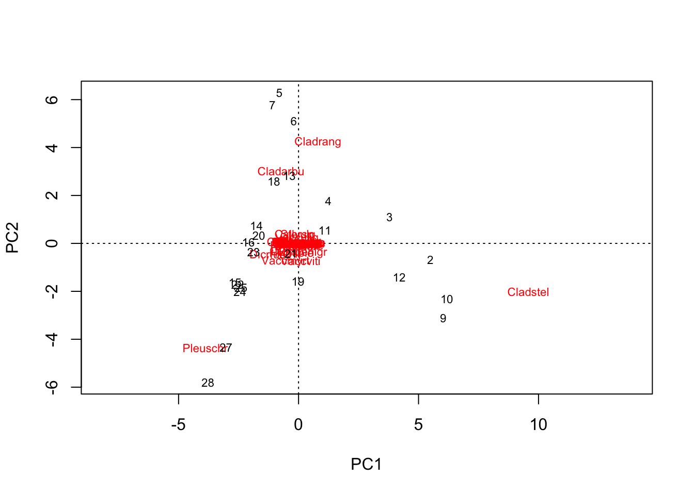
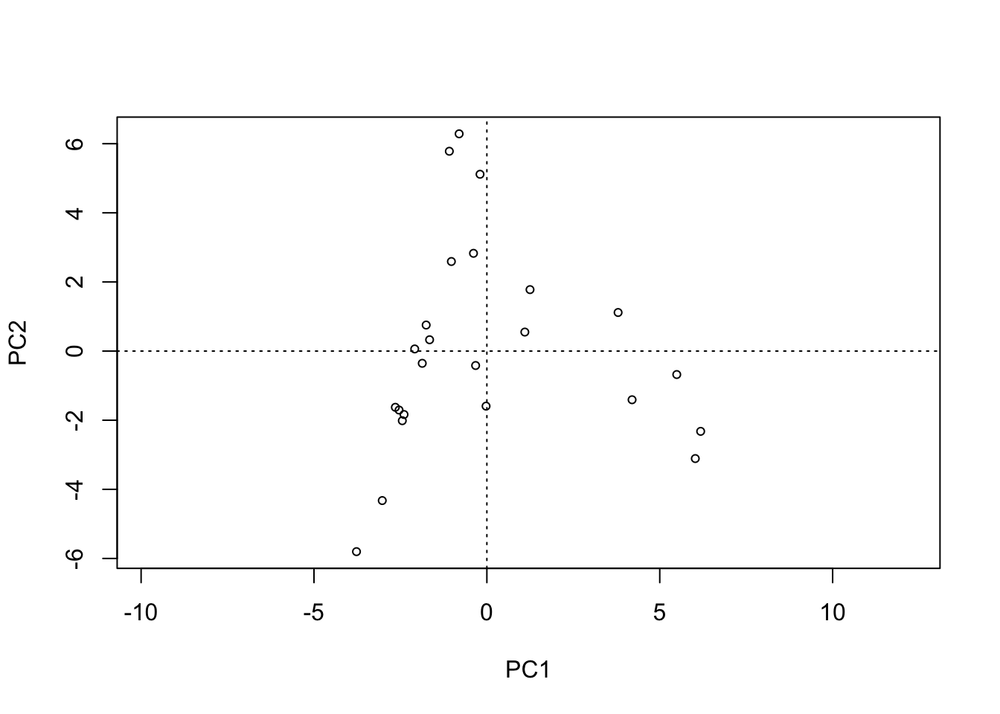
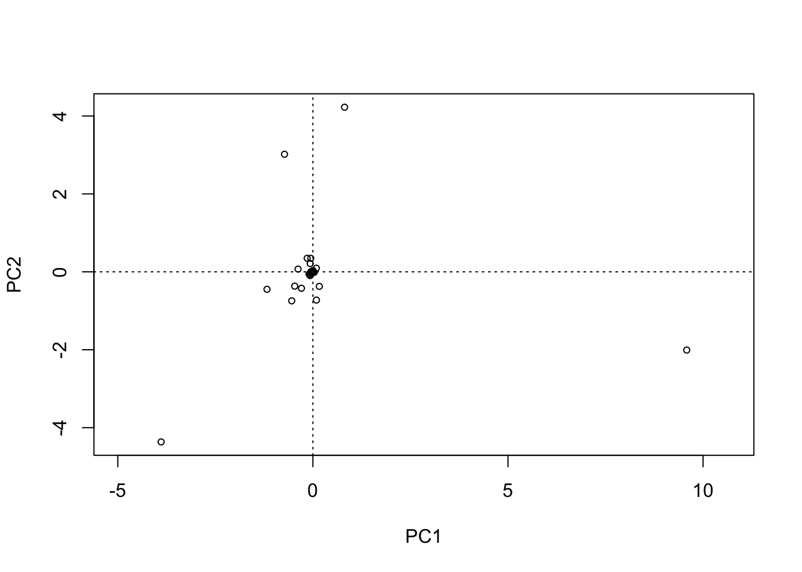
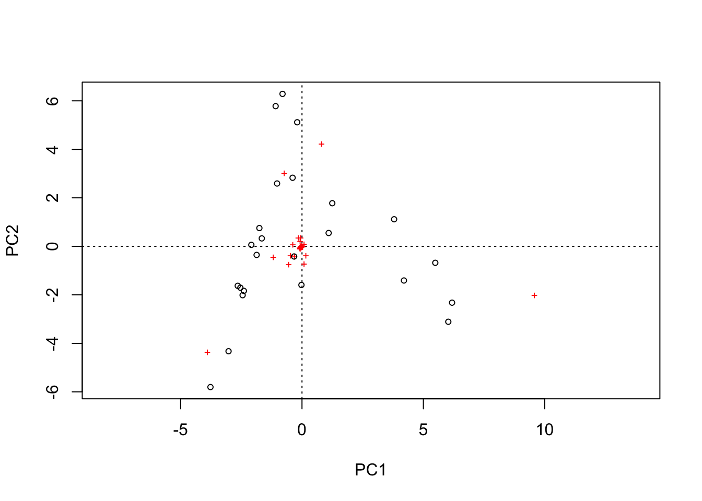
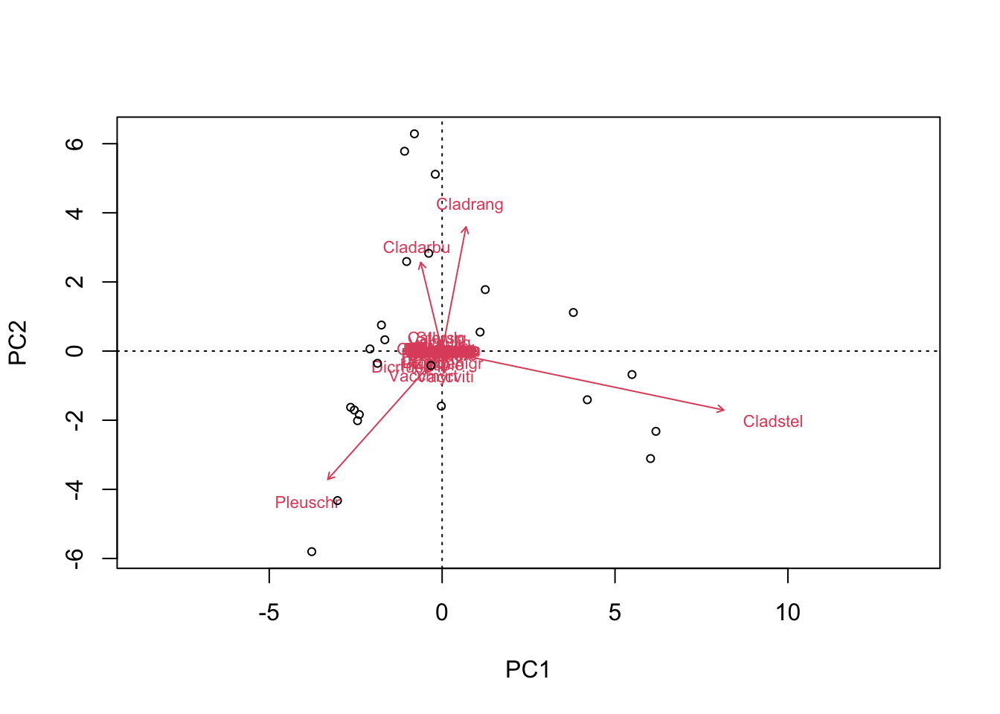
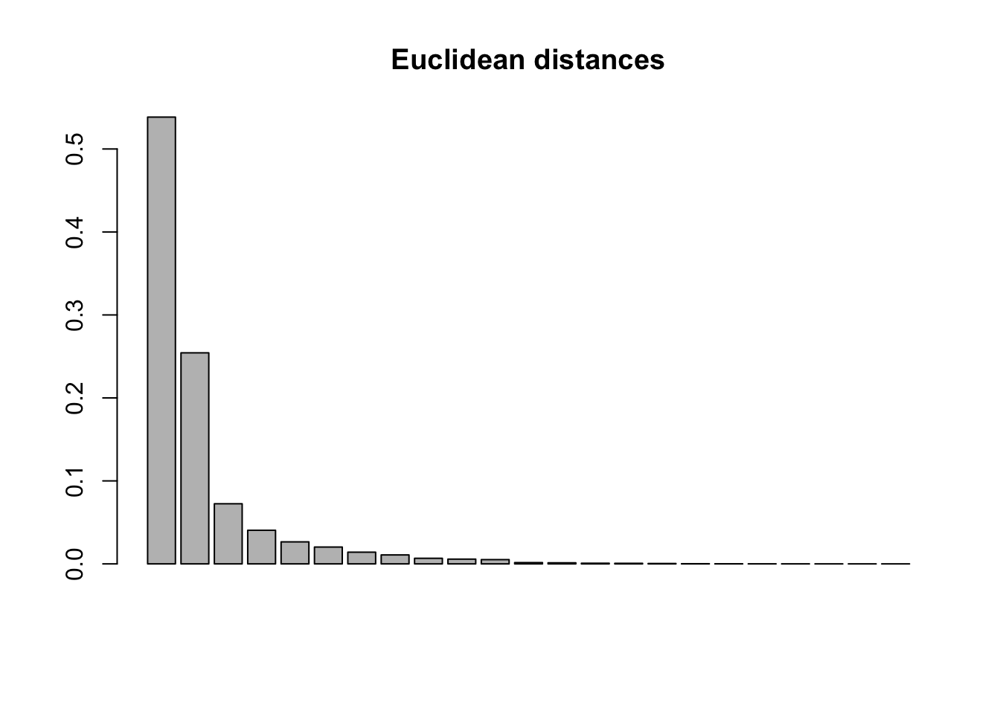
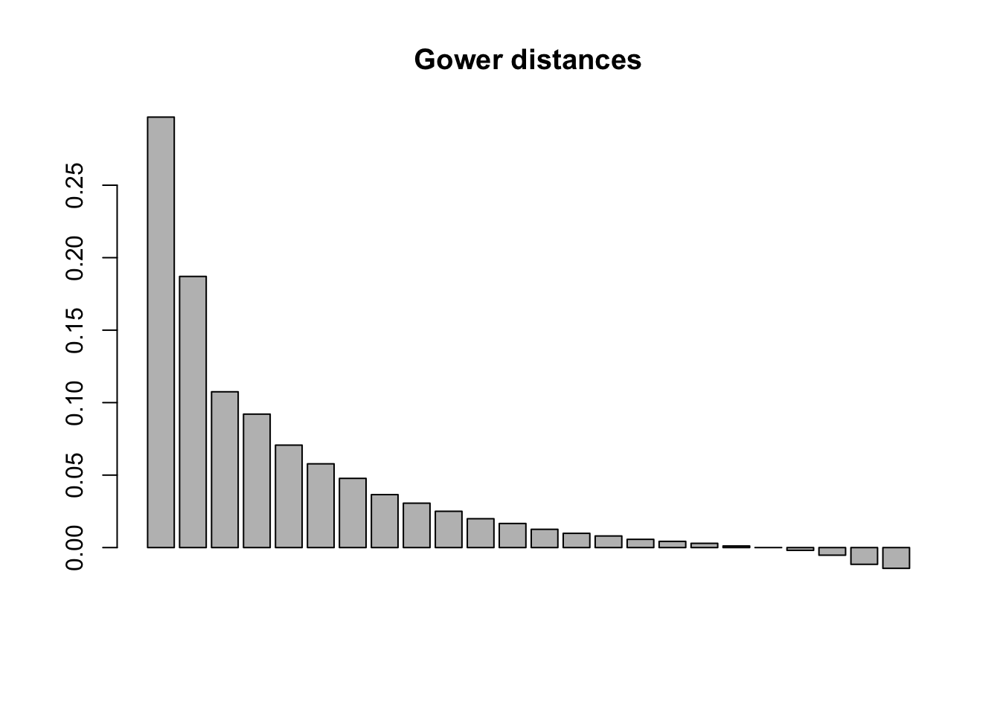
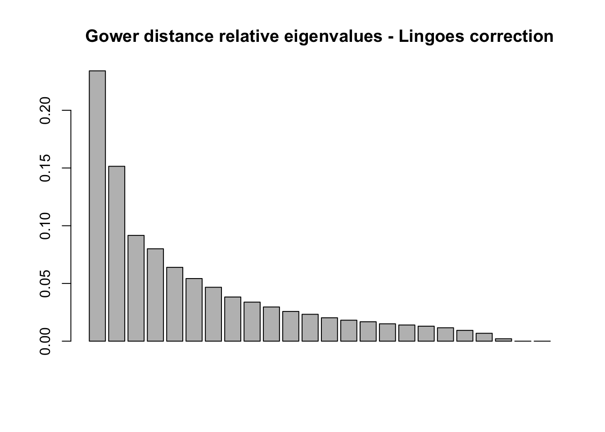

if(length(c("vegan", "ape")[!c("vegan", "ape") %in% installed.packages()[,"Package"]]) > 0){
install.packages(c("vegan", "ape")[!c("vegan", "ape") %in% installed.packages()[,"Package"]])
}Ordinating data using Vegan
Abstract
This vignette describes some of the most commonly used ordination pathways supported by this package. Unconstrained ordination examples cover principal component analysis, principal coordinate analysis, detrended correspondence analysis, and non-metric multidimensional scaling. This vignette shows how to interpret their results by fitting environmental vectors and factors or smooth environmental surfaces to the graph. The basic plotting command, and more advanced plotting commands for congested plots are also discussed, as well as adding items such as ellipses, convex hulls, and other items for classes. The constrained ordination example employs constrained (canonical) correspondence analysis. It shows how a model is defined, and discusses model building and significance tests of the whole ordination, single constraints, and axes.
1.0 Unconstrained ordinations
The vegan package contains all common ordination methods: Principal component analysis (function rda, or prcomp in the base R), correspondence analysis (cca), detrended correspondence analysis (decorana) and a wrapper for nonmetric multidimensional scaling (metaMDS). Additionally, it contains a function for derived dissimilarity (distance) matrixes from community abundance data in a format compatible with the ape function for principal coordinate analysis (pcoa).
In terms of its applicability to disparity analyses, Vegan is a package that supports basic analyses of categorical and traditional morphometric data. Other packages offer a much greater variety of disparity-analysis-specific support. However, as a package rooted in community ecology, the field that disparity borrows most of its methodological techniques from, it is worthwhile familiarising yourself with the capabilities of vegan.
1.1 Principal components analysis
Let’s start simple with principal components analysis. First, check you have vegan and ape installed.
Clear your environment.
rm(list=ls())Now let’s load the example dataset. This is composed of estimated cover values of 44 different species of lichen and other flora.
library(vegan)Loading required package: permuteLoading required package: latticeThis is vegan 2.6-4data(varespec)Try viewing dataset, see if you can spot any trends.
View(varespec)Pretty difficult, right? Let’s try ordinating the data using principal component analysis.
PCA <- rda(varespec, scale = FALSE)First things first, let’s see how effectively we’ve summarised the variance in the dataset. Plot a bar chart of the proportion of the total eigenvalues accounted for by each principal component. For meaningful visualisation, you want to see the vast majority in the first 2-3 axes (so our visualisations of the data will be meaningful).
barplot(as.vector(PCA$CA$eig)/sum(PCA$CA$eig))
round(as.vector(PCA$CA$eig)/sum(PCA$CA$eig), digits = 2) [1] 0.54 0.25 0.07 0.04 0.03 0.02 0.01 0.01 0.01 0.01 0.01 0.00 0.00 0.00 0.00
[16] 0.00 0.00 0.00 0.00 0.00 0.00 0.00 0.00The first two axes account for 0.79 of the total eigenvalues, or 79% of the total variance. Its subjective, of course, but such a high proportion of the variance across the first two axes means a visualisation may be useful. Let’s plot it.
plot(PCA)
The default labels are the row and column names. We can refine this. By including ‘display = “sites”’, we can just plot the rows (the sites in this dataset). Argument type let’s us specify the format of these data points.
plot(PCA, display = "sites", type = "points")
Conversely, changing the ‘display’ argument to “species” will just plot the columns (the species in this dataset).
plot(PCA, display = "species", type = "points")
If you don’t change the ‘display’ arguments, you can change formatting of both the sites and species.
plot(PCA, type = "points")
You can isolate the PCA scores with the following for further analyses.
sitePCA <- PCA$CA$u # Site scores
speciesPCA <- PCA$CA$v # Species scoresYou can also plot the results of PCA as a biplot, where the species are plotted as arrows which signify the direction in which the cover increases for those species.
suppressWarnings(biplot(PCA, choices = c(1,2), type = c("text", "points"), xlim = c(-5,10)))
Don’t worry about the suppressed warnings - they’re just stating that not all arrows could be plotted because some of the species cluster at the origin (i.e. the arrows are of length zero).
You can check out your other options for customising a biplot by running the following.
?biplot.rdaThinking about ordinating your data using this function? Make sure it’s in the right format. You’ll want to match in the following ways:
class(varespec)[1] "data.frame"typeof(varespec)[1] "list"rownames(varespec) [1] "18" "15" "24" "27" "23" "19" "22" "16" "28" "13" "14" "20" "25" "7" "5"
[16] "6" "3" "4" "2" "9" "12" "10" "11" "21"colnames(varespec) [1] "Callvulg" "Empenigr" "Rhodtome" "Vaccmyrt" "Vaccviti" "Pinusylv"
[7] "Descflex" "Betupube" "Vacculig" "Diphcomp" "Dicrsp" "Dicrfusc"
[13] "Dicrpoly" "Hylosple" "Pleuschr" "Polypili" "Polyjuni" "Polycomm"
[19] "Pohlnuta" "Ptilcili" "Barbhatc" "Cladarbu" "Cladrang" "Cladstel"
[25] "Cladunci" "Cladcocc" "Cladcorn" "Cladgrac" "Cladfimb" "Cladcris"
[31] "Cladchlo" "Cladbotr" "Cladamau" "Cladsp" "Cetreric" "Cetrisla"
[37] "Flavniva" "Nepharct" "Stersp" "Peltapht" "Icmaeric" "Cladcerv"
[43] "Claddefo" "Cladphyl"?rdaArgument ‘x’ needs to be a data frame where the rows are samples and the columns are the variables. Bear in mind that your samples can be sites, if you’re sampling environmental variables or species coverage, or species, if you’re sampling species traits. In the case of disparity analysis, the latter will be the case. As such, make sure each row represents a taxonomic unit, and each column represents a trait.
1.2 principal coordinate analysis
Vegan doesn’t support principal coordinate analysis, the ordination of dissimilarity/distance matrices, but ape does. Let’s load it.
library(ape)First, we need to convert our data matrix into a distance matrix. There is a base R which offers a limited selection of distance metrics to choose from. Let’s take a look at our options.
?distOur options are “euclidean”, “maximum”, “manhattan”, “canberra”, “binary” or “minkowski”. If your dataset is 100% complete (i.e) has no missing data, you could use the default Euclidean distance. If your dataset includes any missing data, however, this function will simply drop the rows in which the missing entries occur from the analysis. vegdist offers a much greater variety of distance metrics to choose from. Let’s take a look.
?vegdistLots to choose from! It it worth familiarising yourself not just with how these distances are calculated, but also why they were derived in the first place. This will usually tell you whether they are applicable to your study.
Let’s derive a distance matrix from our data, one using the Euclidean distance, one using the Gower coefficient.
dist.E <- vegdist(varespec, method = "euclidean")
dist.G <- vegdist(varespec, method = "gower")Let’s explore the properties of one of these distance matrices.
class(dist.E)[1] "dist"typeof(dist.E)[1] "double"Just like the output of the base R dist function. Likewise, these distance matrices can be transformed into matrix objects using as.matrix. You might find these objects more intuitive to view and manipulate (I certainly do).
distM.E <- as.matrix(dist.E)
distM.G <- as.matrix(dist.G)
View(distM.E)
View(distM.G)These distance matrices can be manipulated using basic R matrix indexing. Try identifying the pairs of sites separated by the greatest and smallest distances.
Simple pre-ordination indices of disparity can be calculated from these distance matrices using base R functions. For example, from the standard ‘dist’ objects (which do not include the all-zero diagonal), the mean pairwise distance:
mean(dist.E)[1] 56.13408mean(dist.G)[1] 0.1985776However, for most standard indices of disparity we need to ordinate. We can ordinate distance matrices of either format.
PCOA.E <- pcoa(dist.E)
PCOA.G <- pcoa(dist.G)Before we do anything, we must check the relative eigenvalues.
barplot(PCOA.E$values$Relative_eig, main = "Euclidean distances")
barplot(PCOA.G$values$Relative_eig, main = "Gower distances")
Uh-oh, notice anything about the Gower distances plot? Negative eigenvalues have been introduced. This isn’t good - it means that additional variance has been added into the data to make the space defined by the axes of the ordination with positive eigenvalues.
Luckily, function pcoa has a pair of built-in correction options: the so-called Lingoes and Cailliez corrections. These corrections add constants to each non-diagonal distance in the matrix at different stages in the ordination process. The outcomes should be the same - no negative eigenvalues. Let’s try each and check.
PCOA.G.cailliez <- pcoa(dist.G, correction = "cailliez")
PCOA.G.lingoes <- pcoa(dist.G, correction = "lingoes")
barplot(PCOA.G.cailliez$values$Rel_corr_eig, main = "Gower distance relative eigenvalues - Cailliez correction")barplot(PCOA.G.lingoes$values$Rel_corr_eig, main = "Gower distance relative eigenvalues - Lingoes correction")
Hey presto, no more negative eigenvalues. It doesn’t really matter which of these two corrections you use. However, it does matter when you apply them.
If the purpose of your study is to visualize the distribution of variation in your dataset, then corrections like this are not necessary and actually spread the variance in your dataset across more axes (compare the corrected relative eigenvalues with the uncorrected - you’ll see the first couple of axes have higher values in the latter), thereby decreasing the information content of your visualizations.
If you intend to quantify the spread of your samples across all or most axes (i.e. conduct a quantitative analysis of disparity), then it is important to ensure that the space defined by your ordination is Euclidean.
Let’s check out our PCAs. We’ll plot the first two axes of each uncorrected ordination. It is good practice when doing this to report the relative eigenvalues accounted for by each axis. I’ve done this below, rounding to three decimal places.
par(mfrow = c(1,2))
plot(PCOA.G.cailliez$vectors[,c(1,2)], main = "Gower distances",
xlab = paste0("PCOA axis 1 (", round(PCOA.G$values$Relative_eig[1], digits = 3), ")"),
ylab = paste0("PCOA axis 2 (", round(PCOA.G$values$Relative_eig[2], digits = 3), ")"))
plot(PCOA.E$vectors[,c(1,2)], main = "Euclidean distances",
xlab = paste0("PCOA axis 1 (", round(PCOA.E$values$Relative_eig[1], digits = 3), ")"),
ylab = paste0("PCOA axis 2 (", round(PCOA.E$values$Relative_eig[2], digits = 3), ")"))
par(mfrow = c(1,1))These plots look very different but the relative eigenvalues explain why: The ordination of the raw Euclidean distance matrix summarises over 75% of the variance in the dataset across the first two axes, whereas the ordination of the Gower distance matrix captures less than 50%.
This demonstrates the power of a complete data matrix. If you have one - fantastic. You can draw powerful insights into the structure of your data from simple two-dimensional visualisations. This is highly unlikely in analyses of disparity - unless your dataset is small. In these cases, you’ll need to use another distance metric, such as the Gower coefficient.